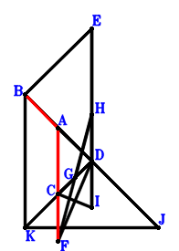
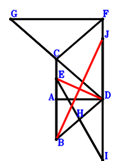
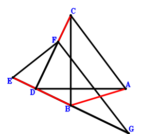

Exercise 10903： Let EBDH, BDIH and BCDG be parallelograms. FCDJ is a trapezoid with CF//DJ and CF=2DJ. J is the midpoint of DK. ED⊥DI and AD⊥DG. BE=AB and AC=CF. Prove that CK⊥FD.
Exercise 12142： Let EBKD be a parallelogram. D is the midpoint of HI and BJ. G is the midpoint of FH and CD. CI⊥FD, KJ⊥ED and AD⊥DC. B, A, D are collinear and \(BE^{2}=2 AD \cdot BD\). Prove that \(AC^{2}=BA^{2} + CF^{2}\).

\(\because \) G is the midpoint of CD \(\therefore \small\overrightarrow{DG}=\dfrac{\small\overrightarrow{DC}}{2}\).\(\because \) G is the midpoint of FH \(\therefore \small\overrightarrow{DH}=- \small\overrightarrow{DF} + 2 \small\overrightarrow{DG}=\small\overrightarrow{DC} - \small\overrightarrow{DF}\).\(\because \) D is the midpoint of HI \(\therefore \small\overrightarrow{DI}=- \small\overrightarrow{DH}=- \small\overrightarrow{DC} + \small\overrightarrow{DF}\).\(\because \) D is the midpoint of BJ \(\therefore \small\overrightarrow{DJ}=- \small\overrightarrow{DB}\).\(\because \) EBKD is a parallelogram \(\therefore \small\overrightarrow{DK}=\small\overrightarrow{DB} - \small\overrightarrow{DE}\).\(\because \) AD⊥DC \(\therefore \small\overrightarrow{DA} \cdot \small\overrightarrow{DC}=0\) . . . . . . \(①\)\(\because \) CI⊥FD \(\therefore \small\overrightarrow{CI} \cdot \small\overrightarrow{DF}=\small\overrightarrow{DF} \cdot \left(- \small\overrightarrow{DC} + \small\overrightarrow{DI}\right)=\small\overrightarrow{DF} \cdot \left(- 2 \small\overrightarrow{DC} + \small\overrightarrow{DF}\right)=- 2 \small\overrightarrow{DC} \cdot \small\overrightarrow{DF} + \small\overrightarrow{DF}^{2}=0\) . . . . . . \(②\)\(\because \) KJ⊥ED \(\therefore \small\overrightarrow{DE} \cdot \small\overrightarrow{JK}=\small\overrightarrow{DE} \cdot \left(- \small\overrightarrow{DJ} + \small\overrightarrow{DK}\right)=\small\overrightarrow{DE} \cdot \left(2 \small\overrightarrow{DB} - \small\overrightarrow{DE}\right)=2 \small\overrightarrow{DB} \cdot \small\overrightarrow{DE} - \small\overrightarrow{DE}^{2}=0\) . . . . . . \(③\)\(\because \) B, A, D are collinear and \(BE^{2}=2 AD \cdot BD\) \(\therefore - 2 \small\overrightarrow{DA} \cdot \small\overrightarrow{DB} + \small\overrightarrow{EB}^{2}=- 2 \small\overrightarrow{DA} \cdot \small\overrightarrow{DB} + \left(\small\overrightarrow{DB} - \small\overrightarrow{DE}\right)^{2}=- 2 \small\overrightarrow{DA} \cdot \small\overrightarrow{DB} + \small\overrightarrow{DB}^{2} - 2 \small\overrightarrow{DB} \cdot \small\overrightarrow{DE} + \small\overrightarrow{DE}^{2}=0\) . . . . . . \(④\)In conclusion, \(- \small\overrightarrow{BA}^{2} + \small\overrightarrow{CA}^{2} - \small\overrightarrow{CF}^{2}=- \left(\small\overrightarrow{DA} - \small\overrightarrow{DB}\right)^{2} + \left(\small\overrightarrow{DA} - \small\overrightarrow{DC}\right)^{2} - \left(- \small\overrightarrow{DC} + \small\overrightarrow{DF}\right)^{2}=2 \small\overrightarrow{DA} \cdot \small\overrightarrow{DB} - 2 \small\overrightarrow{DA} \cdot \small\overrightarrow{DC} - \small\overrightarrow{DB}^{2} + 2 \small\overrightarrow{DC} \cdot \small\overrightarrow{DF} - \small\overrightarrow{DF}^{2}=-2\cdot①-②-③-④=0\), that is, \(AC^{2}=BA^{2} + CF^{2}\).
Exercise 13420： Let C, D be the midpoints of GD, JI, respectively. H is the midpoint of EI and BD. AD⊥CB and GF⊥FD. CA=AB and EB=CF. Prove that BJ⊥ED.

\(\because \) C is the midpoint of GD \(\therefore \small\overrightarrow{DG}=2 \small\overrightarrow{DC}\).\(\because \) H is the midpoint of BD \(\therefore \small\overrightarrow{DH}=\dfrac{\small\overrightarrow{DB}}{2}\).\(\because \) H is the midpoint of EI \(\therefore \small\overrightarrow{DI}=- \small\overrightarrow{DE} + 2 \small\overrightarrow{DH}=\small\overrightarrow{DB} - \small\overrightarrow{DE}\).\(\because \) D is the midpoint of JI \(\therefore \small\overrightarrow{DJ}=- \small\overrightarrow{DI}=- \small\overrightarrow{DB} + \small\overrightarrow{DE}\).\(\because \) CA=AB \(\therefore - \small\overrightarrow{BA}^{2} + \small\overrightarrow{CA}^{2}=- \left(\small\overrightarrow{DA} - \small\overrightarrow{DB}\right)^{2} + \left(\small\overrightarrow{DA} - \small\overrightarrow{DC}\right)^{2}=2 \small\overrightarrow{DA} \cdot \small\overrightarrow{DB} - 2 \small\overrightarrow{DA} \cdot \small\overrightarrow{DC} - \small\overrightarrow{DB}^{2} + \small\overrightarrow{DC}^{2}=0\) . . . . . . \(①\)\(\because \) EB=CF \(\therefore - \small\overrightarrow{CF}^{2} + \small\overrightarrow{EB}^{2}=\left(\small\overrightarrow{DB} - \small\overrightarrow{DE}\right)^{2} - \left(- \small\overrightarrow{DC} + \small\overrightarrow{DF}\right)^{2}=\small\overrightarrow{DB}^{2} - 2 \small\overrightarrow{DB} \cdot \small\overrightarrow{DE} - \small\overrightarrow{DC}^{2} + 2 \small\overrightarrow{DC} \cdot \small\overrightarrow{DF} + \small\overrightarrow{DE}^{2} - \small\overrightarrow{DF}^{2}=0\) . . . . . . \(②\)\(\because \) GF⊥FD \(\therefore \small\overrightarrow{DF} \cdot \small\overrightarrow{GF}=\small\overrightarrow{DF} \cdot \left(\small\overrightarrow{DF} - \small\overrightarrow{DG}\right)=\small\overrightarrow{DF} \cdot \left(- 2 \small\overrightarrow{DC} + \small\overrightarrow{DF}\right)=- 2 \small\overrightarrow{DC} \cdot \small\overrightarrow{DF} + \small\overrightarrow{DF}^{2}=0\) . . . . . . \(③\)\(\because \) AD⊥CB \(\therefore \small\overrightarrow{BC} \cdot \small\overrightarrow{DA}=\small\overrightarrow{DA} \cdot \left(- \small\overrightarrow{DB} + \small\overrightarrow{DC}\right)=- \small\overrightarrow{DA} \cdot \small\overrightarrow{DB} + \small\overrightarrow{DA} \cdot \small\overrightarrow{DC}=0\) . . . . . . \(④\)In conclusion, \(\small\overrightarrow{DE} \cdot \small\overrightarrow{JB}=\small\overrightarrow{DE} \cdot \left(\small\overrightarrow{DB} - \small\overrightarrow{DJ}\right)=\small\overrightarrow{DE} \cdot \left(2 \small\overrightarrow{DB} - \small\overrightarrow{DE}\right)=2 \small\overrightarrow{DB} \cdot \small\overrightarrow{DE} - \small\overrightarrow{DE}^{2}=-①-②-③-2\cdot④=0\), that is, BJ⊥ED.
Exercise 20326： Let DCBG be a parallelogram. DIEB is a trapezoid with EB//ID and EB=2ID. C, J are the midpoints of HD, DB, respectively. HF⊥FD and AD⊥DG. CA=AB and EB=FC. Prove that DE⊥IJ.
Exercise 28725： Let EFG be a triangle with EF⊥FG and FD⊥EG where D lies on EG. B is the midpoint of EG. DA⊥CB. D, F, C are collinear and \(CA^{2}=2 DC \cdot DF\). Prove that \(EB^{2}=BA^{2} + FC^{2}\).

\(\because \) B is the midpoint of EG \(\therefore \small\overrightarrow{DG}=2 \small\overrightarrow{DB} - \small\overrightarrow{DE}\).\(\because \) EFG is a triangle with EF⊥FG and FD⊥EG where D lies on EG \(\therefore \small\overrightarrow{DE} \cdot \small\overrightarrow{DG} + \small\overrightarrow{DF}^{2}=\small\overrightarrow{DE} \cdot \left(2 \small\overrightarrow{DB} - \small\overrightarrow{DE}\right) + \small\overrightarrow{DF}^{2}=2 \small\overrightarrow{DB} \cdot \small\overrightarrow{DE} - \small\overrightarrow{DE}^{2} + \small\overrightarrow{DF}^{2}=0\) . . . . . . \(①\)\(\because \) DA⊥CB \(\therefore \small\overrightarrow{BC} \cdot \small\overrightarrow{DA}=\small\overrightarrow{DA} \cdot \left(- \small\overrightarrow{DB} + \small\overrightarrow{DC}\right)=- \small\overrightarrow{DA} \cdot \small\overrightarrow{DB} + \small\overrightarrow{DA} \cdot \small\overrightarrow{DC}=0\) . . . . . . \(②\)\(\because \) D, F, C are collinear and \(CA^{2}=2 DC \cdot DF\) \(\therefore \small\overrightarrow{CA}^{2} - 2 \small\overrightarrow{DC} \cdot \small\overrightarrow{DF}=- 2 \small\overrightarrow{DC} \cdot \small\overrightarrow{DF} + \left(\small\overrightarrow{DA} - \small\overrightarrow{DC}\right)^{2}=\small\overrightarrow{DA}^{2} - 2 \small\overrightarrow{DA} \cdot \small\overrightarrow{DC} + \small\overrightarrow{DC}^{2} - 2 \small\overrightarrow{DC} \cdot \small\overrightarrow{DF}=0\) . . . . . . \(③\)In conclusion, \(- \small\overrightarrow{BA}^{2} - \small\overrightarrow{CF}^{2} + \small\overrightarrow{EB}^{2}=- \left(\small\overrightarrow{DA} - \small\overrightarrow{DB}\right)^{2} + \left(\small\overrightarrow{DB} - \small\overrightarrow{DE}\right)^{2} - \left(- \small\overrightarrow{DC} + \small\overrightarrow{DF}\right)^{2}=- \small\overrightarrow{DA}^{2} + 2 \small\overrightarrow{DA} \cdot \small\overrightarrow{DB} - 2 \small\overrightarrow{DB} \cdot \small\overrightarrow{DE} - \small\overrightarrow{DC}^{2} + 2 \small\overrightarrow{DC} \cdot \small\overrightarrow{DF} + \small\overrightarrow{DE}^{2} - \small\overrightarrow{DF}^{2}=-①-2\cdot②-③=0\), that is, \(EB^{2}=BA^{2} + FC^{2}\).